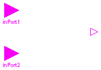

partial block BooleanSI2SO
"2 Single Input / 1 Single Output Boolean control block"
extends Modelica.Blocks.Interfaces.BooleanBlockIcon;
Modelica.Blocks.Interfaces.BooleanInPort inPort1(final n=1)
"Connector of Boolean input signal 1";
Modelica.Blocks.Interfaces.BooleanInPort inPort2(final n=1)
"Connector of Boolean input signal 2";
Modelica.Blocks.Interfaces.BooleanOutPort outPort(final n=1)
"Connector of Boolean output signal";
protected
Boolean u1=inPort1.signal[1] "Input signal 1";
Boolean u2=inPort2.signal[1] "Input signal 2";
Boolean y=outPort.signal[1] "Output signal";
end BooleanSI2SO;
| Name | Default | Description |
|---|---|---|
| threshold | 0 | comparision with respect to threshold |
model Comparision
extends Modelica.Blocks.Interfaces.BooleanBlockIcon;
parameter Real threshold=0 "comparision with respect to threshold"
;
Modelica.Blocks.Interfaces.InPort inPort(final n=1)
"Connector of Real input signal";
Modelica.Blocks.Interfaces.BooleanOutPort outPort(final n=1)
"Connector of Boolean output signal";
protected
Real u=inPort.signal[1] "Input signal";
Boolean y=outPort.signal[1] "Output signal";
end Comparision;